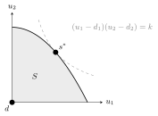

15 Coalitions and axiomatic bargaining
Non-cooperative game theory models each player’s choices and asks what is self-enforcing. Cooperation then has to emerge — through repetition, reputation or punishment. Cooperative game theory takes a different stance: it assumes that players can sign binding agreements and asks which agreements are stable and which are fair. Its two main instruments are coalitional games, where groups of players generate value to be shared, and axiomatic bargaining, where a sensible split is characterised by a list of desirable properties rather than by a bargaining procedure.
15.1 Coalitional games
A coalitional (TU) game is a pair \((\mathcal N, v)\): a set of players \(\mathcal N\) and a characteristic function \(v : 2^{\mathcal N} \to \mathbb R\) with \(v(\emptyset) = 0\). A coalition is any \(S \subseteq \mathcal N\); \(v(S)\) is the total value its members can generate on their own. Each player’s action is the coalition to join (a loner joins \(\{i\}\)), and the value of a coalition is split among its members as payoffs \(x_i\) with \(\sum_{i \in S} x_i = v(S)\).
Transferable utility means \(v(S)\) can be split arbitrarily (think of money). In non-transferable utility (NTU) games, coalition members know in advance what each gets, and \(v(S)\) is replaced by a set of achievable payoff vectors.
A coalitional game is simple if \(v(S) \in \{0, 1\}\) for every \(S\): coalitions are winning or losing (weighted voting, committees). A veto player belongs to every winning coalition; a dictator is a veto player whose singleton coalition is winning.
The set \(\mathcal N\) is the grand coalition. Whether it forms — whether everybody cooperates — depends on how \(v(\mathcal N)\) is split: equal shares, proportional shares, the Shapley value, the nucleolus. A player who deems their share too small may leave.
\((\mathcal N, v)\) is superadditive if \(v(S_1 \cup S_2) \geq v(S_1) + v(S_2)\) for all disjoint \(S_1, S_2\).
In a superadditive game cooperation is always beneficial and the grand coalition maximises total value; the question is how to split it so that nobody wants to leave.
15.2 The core
The core is the set of allocations \((x_1, \dots, x_n)\) such that \[\sum_{i \in \mathcal N} x_i = v(\mathcal N) \quad \text{(efficiency)}, \qquad \sum_{i \in S} x_i \geq v(S) \quad \forall\, S \subseteq \mathcal N \quad \text{(coalitional rationality)}.\]
No coalition can do better by breaking away: a non-empty core means a stable grand coalition. Drawbacks: the core is often empty; sometimes it is very large; and core allocations may be unfair.
A collection of weights \(\alpha(S) \geq 0\), \(S \neq \emptyset\), is balanced if \(\sum_{S \ni i} \alpha(S) = 1\) for every player \(i\) — think of \(\alpha(S)\) as the fraction of time each member of \(S\) spends in \(S\). The game is balanced if \(\sum_S \alpha(S)\, v(S) \leq v(\mathcal N)\) for every balanced collection.
A TU game has a non-empty core if and only if it is balanced.
The proof is LP duality: the core is non-empty iff the minimum of \(\sum_i x_i\) subject to \(\sum_{i \in S} x_i \geq v(S)\) is at most \(v(\mathcal N)\), and the dual of that LP is the maximisation over balanced weights.
\((\mathcal N, v)\) is convex if \(v(S_1 \cup S_2) + v(S_1 \cap S_2) \geq v(S_1) + v(S_2)\) for all \(S_1, S_2\) — equivalently, a player’s marginal contribution grows with the coalition it joins.
Sufficient conditions for a non-empty core: the game is convex (Shapley, 1971); or it is simple with at least one veto player (give everything to the veto players). In practice one can also try a natural allocation, such as the equal split, and check whether it lies in the core.
15.3 The Shapley value
The core is about stability; the Shapley value is about fairness. Shapley (1953) characterised a unique allocation rule by four axioms: efficiency (\(\sum_i \phi_i = v(\mathcal N)\)), symmetry (interchangeable players get the same), null player (a player contributing nothing to any coalition gets \(0\)), and additivity (\(\phi(v + w) = \phi(v) + \phi(w)\)).
The unique rule satisfying the four axioms is \[\phi_i(v) = \sum_{S \subseteq \mathcal N \setminus \{i\}} \frac{|S|!\,(n - |S| - 1)!}{n!}\,\bigl[v(S \cup \{i\}) - v(S)\bigr],\] player \(i\)’s average marginal contribution over all \(n!\) orders in which the grand coalition can be assembled.
Three players; any coalition containing player 1 and at least one other is worth \(1\); everything else is worth \(0\). Player 1’s marginal contribution is \(1\) whenever he is not first in the order (4 of the 6 orders), so \(\phi_1 = \tfrac23\); players 2 and 3 each contribute only when they join player 1 alone, \(\phi_2 = \phi_3 = \tfrac16\). The core, instead, is \(\{(1, 0, 0)\}\): since \(x_1 + x_2 \geq 1\) and \(x_1 + x_3 \geq 1\) with \(x_1 + x_2 + x_3 = 1\), both \(x_2\) and \(x_3\) must be \(0\). Fairness and stability can disagree. (For convex games the Shapley value always lies in the core.)
Non-superadditive games. When cooperation is not always beneficial (coordination costs, interference, overhead), the grand coalition need not form. The questions become how many coalitions emerge, how they form, and whether the resulting partition is stable. A constructive answer is the merge-and-split process: starting from any partition, coalitions merge if all members benefit, and split if some sub-coalition benefits; under suitable preference orders the process converges to a stable partition.
Applications of coalitional games in ICT include content sharing in P2P networks, spectrum sharing among operators, cooperative transmission and CoMP clustering in cellular networks, vehicular communication, localisation and cooperative crowdsensing.
15.3.1 Two standard families
Power in committees. In a weighted voting game \([q; w_1, \dots, w_n]\) a coalition wins iff its total weight reaches the quota \(q\). The Shapley value of this simple game is the Shapley–Shubik power index: the fraction of orderings in which a player is pivotal, turning a losing coalition into a winning one. Power is not proportional to weight. In \([4; 3, 2, 1, 1]\) the weight-2 player is exactly as powerful as each weight-1 player, since any coalition it makes winning, a weight-1 player would too. The Banzhaf index instead counts, over unordered coalitions, how often a player is critical. A simple game has a non-empty core iff it has veto players, and then the core gives everything to them.
Cost sharing (airport games). Players need a facility of different sizes, with costs \(c_1 \leq c_2 \leq \dots \leq c_n\), and a coalition pays the largest cost among its members, \(C(S) = \max_{i \in S}c_i\). The Shapley value has a transparent form: the cost of each increment \(c_k - c_{k-1}\) is shared equally among the \(n - k + 1\) players who need it, \[\phi_i = \sum_{k=1}^{i}\frac{c_k - c_{k-1}}{n - k + 1}, \qquad c_0 = 0.\] Small users pay only for the part of the runway they use. The same rule is used to share network infrastructure costs.
15.4 Nash bargaining
Return to two players splitting a surplus — a Rich and a Poor player sharing one unit, each keeping their share only if they agree. Chapter 11 modelled the negotiation as an alternating-offer game. Nash (1950) proposed instead to characterise the outcome axiomatically, without modelling any game at all.
Let \(S \subset \mathbb R^2\) be a compact, convex set of feasible utility pairs and \(d = (d_1, d_2)\) the disagreement point: what each gets if no agreement is reached — the worst threat a player can make.
A bargaining solution \(s^*(S, d)\) should satisfy:
- Feasibility / individual rationality: \(s^* \in S\) and \(s^* \geq d\);
- Pareto efficiency: no \(s \in S\) improves on \(s^*\) for one player without hurting the other;
- Symmetry: if \(d_1 = d_2\) and \(S\) is symmetric, then \(s^*_1 = s^*_2\);
- Invariance to positive affine transformations of either player’s utility;
- Independence of irrelevant alternatives: if \(U \subset S\) is compact and convex and \(s^*(S, d) \in U\), then \(s^*(U, d) = s^*(S, d)\).
The unique solution satisfying axioms 1–5 maximises the Nash product: \[s^* = \arg\max_{s \in S,\ s \geq d}\ (s_1 - d_1)(s_2 - d_2).\]

Figure: the Nash bargaining solution is the point of the Pareto frontier touched by the highest level curve of the Nash product.
Generalisations cover more than two players, asymmetric bargaining power (dropping symmetry gives the generalised NBS \(\max \prod_i (s_i - d_i)^{\beta_i}\)), and with \(d = 0\) the NBS coincides with proportional fairness, widely used in resource allocation. A notable link: the Rubinstein SPE of Chapter 11 converges to the Nash bargaining solution as \(\delta \to 1\).
Is the NBS fair? Fairness is subjective, and bargaining power matters. The rich player can tolerate rejecting a fair deal and claim more; the poor player accepts because even a little helps. As a solution concept the NBS provides Pareto optimality, accounts for bargaining power (sometimes unjustly), requires a convex utility region, and is static — it says nothing about the dynamics of reaching the agreement.
15.5 Kalai–Smorodinsky solution
Kalai and Smorodinsky (1975) replaced IIA, which they found unappealing, with individual monotonicity: if the feasible set is enlarged in a way that raises the maximum utility attainable by player \(i\), player \(i\) should not lose. Together with axioms 1–4 this characterises the unique solution \[s^{KS} = d + \lambda^* (I - d), \qquad \lambda^* = \max\{\lambda : d + \lambda (I - d) \in S\},\] where \(I = (I_1, I_2)\) is the ideal point of individual maximal utilities. Graphically, \(s^{KS}\) is where the segment from \(d\) to \(I\) meets the Pareto frontier: each player gets the same fraction of their maximal possible gain.
The KS solution extends to more players, asymmetric cases and non-convex \(S\), and rewards most the players with the largest potential gains. Neither solution is “right”: both are points on the Pareto frontier, and the choice between them is philosophical. Constructive procedures that converge to each exist, as do dynamic bargaining models.
Two transmitter–receiver pairs share a frequency-selective channel and interfere with each other. The non-cooperative Nash equilibrium is inefficient: each transmits at full power and beamforms only to maximise its own rate. Using the NE rates as the disagreement point, the NBS (or KS) picks a Pareto-efficient operating point on the rate region — whose shape, not the bargaining formula, is the hard part of the problem. In multimedia transmission the Pareto frontier of a resource-sharing problem is easy to find, but QoE utility functions make the region complex and fairness delicate.
15.6 Exercises
Further problems (not covered by the handbook).
(Weighted voting) Four parties hold weights \(3, 2, 1, 1\) and decisions need \(4\) votes. Compute the Shapley–Shubik and Banzhaf indices and decide whether the core is non-empty.
Solution. Of the \(24\) orderings, \(A\) (weight 3) is pivotal in \(12\) and each of \(B, C, D\) in \(4\): Shapley–Shubik \((\tfrac12, \tfrac16, \tfrac16, \tfrac16)\). Banzhaf counts: \(A\) is critical in \(6\) coalitions, each other party in \(2\), giving normalised \((\tfrac12, \tfrac16, \tfrac16, \tfrac16)\) here as well. \(B\)’s extra weight buys no power. There is no veto player (\(\{B, C, D\}\) wins without \(A\)), so the core is empty: any allocation leaves some winning coalition with less than \(1\).
(Airport game) Three airlines need runways costing \(1\), \(2\), \(3\); a shared runway must be as long as the largest need. Find the Shapley cost shares and check that they are in the core of the cost game.
Solution. Increment \(1\) is shared by three, increment \(2 - 1\) by two, increment \(3 - 2\) by one: \(\phi = (\tfrac13,\ \tfrac13 + \tfrac12,\ \tfrac13 + \tfrac12 + 1) = (\tfrac13, \tfrac56, \tfrac{11}6)\), summing to \(3\). Core of a cost game: no coalition pays more than its stand-alone cost. \(\{1\}\): \(\tfrac13 \leq 1\); \(\{2\}\): \(\tfrac56 \leq 2\); \(\{3\}\): \(\tfrac{11}6 \leq 3\); \(\{1, 2\}\): \(\tfrac76 \leq 2\); \(\{1, 3\}\): \(\tfrac{13}6 \leq 3\); \(\{2, 3\}\): \(\tfrac83 \leq 3\). In the core: airport games are concave cost games, for which the Shapley value is always in the core.
From the course material:
Three firms can share a facility: \(v(\{i\}) = 0\), \(v(\{i, j\}) = 4\) for every pair, \(v(\mathcal N) = 9\). Is the core non-empty? Compute the Shapley value.
Solution. By symmetry try \(x = (3, 3, 3)\): every pair gets \(6 \geq 4\), so the core is non-empty (it is the set of \(x \geq 0\) summing to \(9\) with every pair getting at least \(4\), i.e. \(x_i \leq 5\)). The game is symmetric, so the Shapley value is \((3, 3, 3)\), in the core. (The game is convex: marginal contributions \(0, 4, 5\) increase with coalition size.)
Two players split one unit with disagreement point \(d = (0.2, 0)\) and linear utilities. Find the Nash bargaining solution and compare it with the Kalai–Smorodinsky solution.
Solution. On the frontier \(s_2 = 1 - s_1\): maximise \((s_1 - 0.2)(1 - s_1)\), giving \(s_1 = 0.6\), \(s^* = (0.6, 0.4)\): each player gets their disagreement payoff plus half the surplus \(0.8\). Ideal point: \(I_1 = 1\) (with \(s_2 = 0 \geq d_2\)), \(I_2 = 0.8\) (with \(s_1 = 0.2\)). The KS segment \((0.2 + 0.8\lambda, 0.8\lambda)\) meets \(s_1 + s_2 = 1\) at \(\lambda = 0.5\): \(s^{KS} = (0.6, 0.4)\). For this linear frontier the two coincide.
15.7 Sources
Prof. Badia, Game Theory slides, deck Gth2018 (coalitional games, core, Bondareva–Shapley, convex games, merge-and-split, Nash bargaining, Kalai–Smorodinsky, applications). Original references: L. Shapley, A value for n-person games (1953); O. Bondareva (1963) and L. Shapley (1967) on balancedness; L. Shapley, Cores of convex games, Int. J. Game Theory 1, 11 (1971); J. Nash, The bargaining problem, Econometrica 18, 155 (1950); E. Kalai and M. Smorodinsky, Econometrica 43, 513 (1975); A. Leshem and E. Zehavi, Game theory and the frequency selective interference channel, IEEE Signal Proc. Mag. 26, 28 (2009).